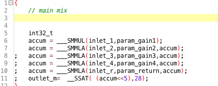
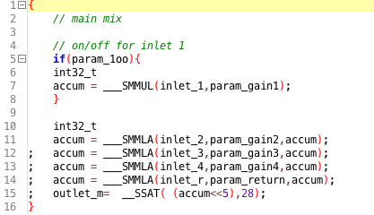

I have made this 4 channel mixer with 1 send for each channel and a master volume knob. I am still a beginner so I had to cut a corner on the master volume, which is implemented by routing the master out into a new inlet on the mixer and then routed to a new output. This can probably be done internally, but I just dont understand how to do it, yet. My idea works, but it gives a couple of extra inlets/outlets, I can live with that for now
But I am having problems with implementing the on/off buttons for the individual channels. The original code looks like this:

This is my edited code:

The patch goes live, but for some reason it does not turn the first channel on when I push the button. Nothing happens, I have used ths function is several other ways that worked, but I think this might be related to the SMMUL function? I havent used that before in association with the SMMUL.
Any ideas on what I am missing here?
EDIT: ok, so just listened to the actual output of the mixer and it sounded awful.. Had Guess there are some things I need to check up on.
Ah ok, that makes sense. I think in some other cases i used it at k-rate i didnt use a false.
But was actually trying to figure out how to do that for other purposes to.. Thank you for the hint
But I think there are other issues which is beyond my imagination right now to add those input on/off switches. when I added it for the first channel as shown above, it sounds very awful, like the channels are some how merged together and some bit shifting or similar is happening Maybe it is related to two int32_t. With out the on/off it sounds as it should.
this is only 'pseudo code' , dont expect it to compile (its not necessarily how I would do it, rather a solution close to how you are attempting to do it)
I think the key is for your objects, you need to know what every line of code does, and why... e.g. why are you defining vars, those extra curly braces (what do they do!) ... it has to be deliberate - which is a bit different from say patching, which can be a bit more 'trial and error'
Cool wil look into it. The code itself is taken from factory mixer object. About the defining int32_t and accum more than once; I did that cause I followed an instruction by sirsicksik. He wrote that if i use the if(param_on){ CODE } function i would need to define the int32_t inside the { CODE }. So I also needed to do the accum inside, if I rmember correct. Will try out different approaches.
About calling the different functions more than ones, I think that also might be the reason to why it sound really bad when I do the { CODE } function. Anyway, will experiment more.
Yes you are totally right, I need to understand it better. I know I could start all the way from the bottom and read a lot of books, but I need to get my hands filthy and try something out myself to start with. And then start reading. One thing I'd like to find a webpage with a lof of examples of object based c code. Besides than Axoloti of course
I do, to some extend understand how the parameters & inlet are doing and how to set them up, but not 100% sure about the SMMUL and the accum. Those are new teritory. SMMUL, is from how I understand a way of collecting a chain of functions, like input > gain knob > output.
I found some info on SMMUL in another thread. Will read that and see if I understand it a bit better.
I THINK i know what the curly braces does. They kind of isolate everything inside { CODE }. In my case I want to turn what is inside it on and off so that is what happens... if it actually was working, ha But I got it working in other objects like the togam i just added to com.lib a few days ago. Another example from the top of my head is that you could use this to make a switch that switches between unipolar and bipolar conversion. For example using "false" we talked about yesterday for unipolar and "if" for the bipolar. But I am probably wrong in some of it..... or everything... Still learning
I need/want to learn coding to some extend. You know, some things you can patch up using factory objects and it will maybe take 50% DSP. If you write specific code for it, you can lower that amount a lot. I just think it will make Axoloti way more effective to have more dedicated objects. Dont get me wrong, the low level objects are really good for learning and also just for patching, but I would like to take the next step and learn how to code to make everything more effective. I think Sirsicksik's contributions to this com.lib are tremendous. He has really helped making the object list a lot more interesting and also Axoloti in general more effective.
Thank you for the help, anyway I will keep trying/learning. Maenwhile I will do some other small code projects and I am sure I will understand how to make these on/off buttons eventually
yeah, the area you want to read up about is compound statements and variable scoping in C. id recommend a book really, as they will cover this in the first few chapters and it will give you a solid foundation to build on - its the quickest way to get down the basics. (you'll then look back at the above code and go 'ah' .. as it'll be really clear the issue)
one tip: im not quite sure why the above code is formatted in this way, as it is, frankly, its not formatted well - it makes it difficult to read (and easy to misread) ... I suspect this is because the code was originally 'generated automatically'... it would be work reformatting, in this case, put each statement on a a separate line, and removing the redundant semicolons, it will make the variable declarations much clearer!
smmul - you can get from the arm api , but basically you can consider it as a multiply function, whereas the smmla is a muliply and add (i.e. a*b+c) ... (we are not chaining functions just multiplying variables, which is all inlets/params etc are)
im sure when sirsick instructed you to put things in a separate block this was to avoid issues with variable names being reused, i.e a different use-case, here you want to continue to use the same variable, as you want to use the result from the previous function in the next. so it all comes down to intention...
dont necessarily over estimate this... the factory object will produce efficient code, its clever how the objects are connected, and how the compiler can optimise code paths. (and you also leverage the fact johannes knows alot of DSP tricks!)... similarly it wont necessarily be smaller, as the compiler can also eliminate 'unused code paths'
i do write some objects because its faster for me to express myself in C than in a GUI language (because that is my background!) but it wont always be much more efficient than if id patched it! there is perhaps one area though that coding is useful, and that is when needing to do conditional or looped code, as there is no 'patching metaphor' for these.
anyways, theres lots to explore with both patch and object writing, I think the surface has only been scratched so far
Which book would you reccomend for this? I guess I just need to get started
I am only trying to work wih what is there, cause writing something from beginning I am not capable of yet. So it was my start place. Anyway, I will look into the suggestions you made and se what I can get working.
Yes me too. One thing I think needs to be touched again is reverb, efficient reverb. I have made a few reverbs that sounds pretty ok, but they use A LOT of all pass filters. And they use a lot of ccmos ram. I am wondering if for example all passes could be written more efficiently.
Yeah maybe I am overestimating it, but it is what makes me want to learn and drive me to do it, so I choose to stay ignorant for a while untill I learned more, hehe Then Ill probably, as you say, go "ah"...
About Johannes. I think he is great and the project is awesome. I do understand that this is a very special project and it is so cool that it is made by one person. And some great helpers too So it was not an attempt to miscredit Johannes skills. The baby steps I am learning now makes it even more clear to me how much work and coding skill there is in a project like Axoloti. So cudos from here to those invloved in making Axoloti reality
If it helps to have another opinion, I think the comment from @thetechnobear, "there is perhaps one area though that coding is useful, and that is when needing to do conditional or looped code, as there is no 'patching metaphor' for these." Is actually very interesting, I'm certainly no coding master but all my skill and experience is with VB, and the one area I have not had many issues transferring concepts from VB to C is with conditional and looped coding, all the other stuff is quite alien to me. And the one thing about being able to do conditions and looping, is once I get the condition / loop right, there are many other objects already available to pass the data to for further processing, and any other extra conditions you may want to add etc. Maybe this is a good place to start, there is massive online content from really simple to complex methods. One of my favorites is scrolling through an array with For loops, and I guess that's another thing, there can be many different ways to achieve the same results, it is often left up to methods you are most comfortable with until you learn a new way you like better. Like you, I am completely 100% self taught, just takes time and practice. When I started there wasn't the internet to learn and gather resources from either. It was steal a beginners book from the local library on Basic programing, go home, copy over the code, and try and work out what's happening.
Sorry for the late reply and thank you for the moral support
I am happy to hear others in here have learned on their own. I have found a few online learning centerd with some free tutorials. trying to go through some of them, slowly.
I remember I used to buy some computer magazines when I was very young, with code for programming games for Commodore 64. At that time it was hard work. No copy pasting, only reading from the magazine and typing it in manually. Didnt really learn anything at that time, but now it is getting better.
Yes also getting better understanding og basic Axoloti object coding. Making customized versions of factory objects in almost every patch. FInding different ways of doing things.
Anyway, there are still so much in Axoloti to check out, even without coding. Having a lot of fun over here
Sorry to bring this up again, but I still have not gotten this to work yet. I have tried using an if/else argument for on/off button, as shown at the top of this thread. But I gave up on this since I am not that experienced yet. As soon as I include the SMMUL SMMLA in the if/else argument the patch wont go live.
So now I am thinking of a different approach instead of using if/else argument. The new idea would be to make an on/off button that instead of turning the whole input off it just forces the input level to zero. This is what I tried to do on the picture:
I know there are several new users who are experienced with coding, so I am hoping that someone might have an easy solution for turning an input off, that I am missing as a beginner:
This reduces the dsp load from 7% to 3% compared to the same mixer patched with factory objects. The version with factory objects is 7%, the new version here is only 3%.
NICE!
The mixer is added to the community library. See it here:


{kind=link}
{kind=link}